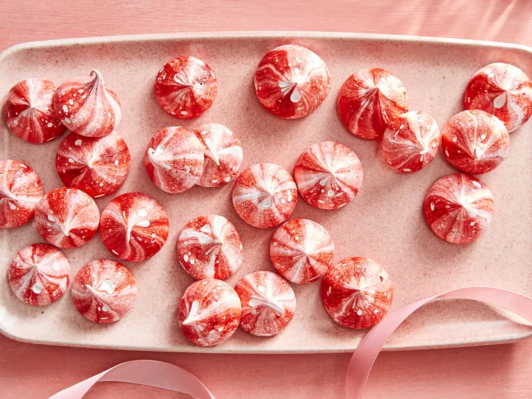

Strawberry Malted Milk Meringues

Description
Channel Willy Wonka and surprise Santa when you combine two sweet treats.
Here, a festive meringue that tastes like a strawberry malt.
Ingridients
- 1 ½ cups freeze-dried strawberries (or as needed)
- 5 large egg whites
- 1 ½ cups sugar
- 1 dash cream of tartar
- 2 tablespoons malted milk powder
- ½ teaspoon vanilla extract
- red gel food coloring (Optional)
Steps
- Preheat the oven to 200 degrees F (95 degrees C). Fit a large round pastry
tip in a pastry bag. Set bag, tip side down,
in a large, tall cup and fold edges over cup rim for easy filling.
- Pulverize freeze-dried strawberries in a food processor. Measure out 3 tablespoons
strawberry powder.
Use any leftovers for dusting the plate or another use.
- Whisk together egg whites and sugar in a bowl set over a pot of simmering water.
Whisk until sugar has dissolved, about 4 minutes. Transfer to a large bowl. Add
cream of tartar. Beat with an electric mixer at low speed until mixture starts to
foam. Continue beating at high speed until glossy and stiff peaks form (tips stand
straight).
Fold in 3 tablespoons strawberry powder, milk powder, and vanilla.
- Paint stripes of red gel food coloring (if using) inside the pastry bag.
Carefully fill pastry bag with meringue mixture. Dot corners of a baking sheet with
meringue, then line with parchment paper.
(The dots will keep the paper in place.)
- Pipe quarter-size meringue dollops on the baking sheet,
pulling bag straight up and spacing about 1 inch apart.
- Bake in the preheated oven until meringues are firm and easily peel off the parchment,
60 to 75 minutes.